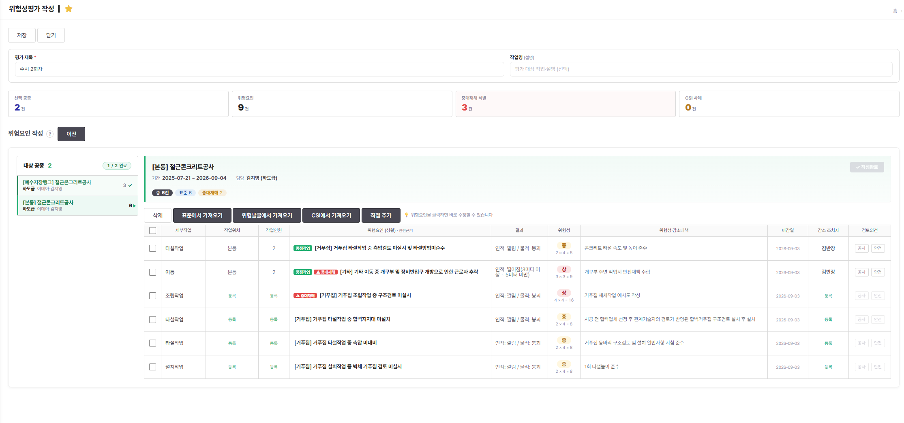
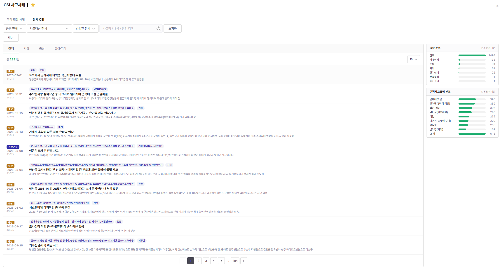

현장이 매일 엑셀로 쓰던 작업일지를 시스템으로 옮겨, 작성 시간을 40분에서 10분으로 줄이고 그 데이터를 21개 메뉴가 그대로 쓰게 만들었습니다.
시스템에 등록된 계약은 658건이고, 그 가운데 작업일지를 매일 쓰는 운영 현장은 5곳입니다. 작성 시간은 이 5곳 · 하루 5건 기준으로 산정했습니다 — 5건 × 30분 × 20영업일 = 월 약 50시간.
건설 용어 세 줄 — 도메인을 모르고 읽으실 분께
문제
도입 전 현장은 작업 내역과 공정률을 모두 엑셀로 직접 관리했습니다.
- 작업 내역을 매일 엑셀에 손으로 작성
- 공정률을 엑셀 수식으로 직접 계산
- 그 작업이 공정표상 어느 항목에 붙는지 일일이 대조
- 같은 수량을 주간·월간 보고와 기성 청구에 다시 옮겨 적음
- 현장마다 수식이 달라 본사 취합 때 숫자가 어긋남
- 입력한 실적이 공정률에 반영되기까지 며칠
한 일
- 입력 한 번으로 공정률까지 현장은 작업 내용과 수량만 입력하고, 공정률 계산과 관련 항목 연결은 저장하는 시점에 시스템이 처리합니다
- 데이터 기준 통일 본사가 만든 공정표를 기준으로 삼아 공정표에 없는 작업은 실적으로 생길 수 없게 막았습니다. 현장이 임의로 만든 항목이 섞이지 않아 본사와 현장이 같은 기준 위에서 관리됩니다
- 반복 입력 제거 작업일지 실적을 단일 원천으로 두고 주간·월간 공정보고 · 기성 청구 · 대시보드 등 21개 화면이 이 데이터를 참조합니다. 문서마다 같은 숫자를 옮겨 적을 일이 없어졌습니다
- 실적 확정 기준 변경 실적 확정이 전자결재 승인에 묶여 공정률이 며칠씩 밀렸습니다. 결재는 확정 절차로만 남기고 실적은 입력 즉시 반영되도록 업무 기준을 바꿨습니다
- 현장에서 바로 입력 사무실로 돌아와 다시 적던 절차를 없애고 작업 직후 모바일로 입력하도록 했습니다. 기억에 의존해 옮겨 적으며 생기던 오차도 함께 줄었습니다
- 작업일지 자동 생성 매일 새로 만들어야 하는 문서를 공휴일 제외 근무일 기준으로 자동 생성하고 작성자·날씨 같은 기본 정보를 미리 채웁니다
- 대량 집계 성능 420만 행 자원 실적을 조건 없이 전체 집계하던 구간을 조회 대상부터 먼저 좁히도록 바꾸고 복합 인덱스를 더해 집계 시간을 998ms 에서 115ms 로 줄였습니다. 이후 대량 집계 화면은 “집계하기 전에 조회 범위를 먼저 좁힌다”를 공통 점검 기준으로 쓰고 있습니다
화면


.png)

깊이 보기 — 문제 해결 3건
성능목록 조회 2.1초 지연998ms → 115ms
정합성작업 항목을 지웠는데 작업내역이 되살아남삭제 경로 누락
업무 기준공정률이 며칠씩 밀려 현장이 화면 숫자를 믿지 않음코드가 아니라 기준을 바꾼 건
공사 대금 청구를 외부 서비스와 주고받는 구조를 다시 짜서, 양쪽 금액이 어긋나는 일과 연동 실패로 업무 저장이 되돌아가는 일을 없앴습니다.
성능 수치 대신 구조를 적었습니다. 이 업무의 난이도는 처리량이 아니라 두 곳의 상태를 어긋나지 않게 유지하는 데 있었습니다.
건설 용어 세 줄 — 도메인을 모르고 읽으실 분께
문제
외부로 나가는 송신이 메뉴마다 제각각이었고, 상대 서비스의 상태가 우리 업무를 직접 흔들고 있었습니다.
- 외부 송신 경로가 메뉴마다 흩어져 어떤 건 이력이 남고 어떤 건 남지 않음
- 외부 호출이 업무 저장과 한 덩어리라, 상대가 응답하지 않으면 저장까지 실패
- 한쪽에서만 상태가 바뀌면 양쪽 청구 금액이 서로 달라짐
- 실패한 송신을 골라낼 방법이 없어 다시 보내기 어려움
- 운영에서만 외부 화면이 열리지 않는데 개발·테스트는 정상이라 원인이 안 잡힘
- 여러 회차 리포트를 한 번에 다시 만들 때 진행 상황을 알 수 없음
한 일
- 우리 시스템과 외부 서비스의 역할을 분리 금액과 원가는 외부 서비스가, 회차 · 결재 · 실적은 우리 시스템이 가지도록 경계를 정했습니다. 회차를 열면 작성 요청이 나가고, 외부에서 내역서를 고치면 그 변경분이 곧바로 들어옵니다. 청구의 근거가 되는 실적 수량은 작업일지에서 올라옵니다
- 상태를 양쪽에 맞춰 전달 결재 승인 · 반려와 청구 삭제까지 외부로 전달해 한쪽에서만 바뀐 채 금액이 달라지는 일을 없앴습니다
- 대외송신을 공통 창구로 통합 메뉴마다 흩어져 있던 외부 호출을 창구 하나로 모아 요청 · 응답 · 성공여부가 자동으로 이력에 남습니다. 실패한 건만 골라 다시 보낼 수 있습니다
- 연동 실패와 업무 저장 분리 외부 송신을 커밋 이후 실행으로 옮겨, 상대 서비스가 응답하지 않아도 저장한 업무는 그대로 남습니다
- 환경별 주소 설정 정리 화면을 여는 주소와 API 를 호출하는 주소를 설정 키로 나누고 네 환경(local · dev · test · prod)으로 정리했습니다. 이후 주소 변경은 설정만 고치면 됩니다
- 리포트 다건 재생성 진행 표시 여러 회차를 한 번에 다시 만들 때 완료 알림(SSE)으로 어디까지 됐는지 바로 보이게 했습니다
깊이 보기 — 문제 해결 2건
운영 장애운영에서만 외부 화면이 열리지 않음화면 주소 ≠ API 주소
구조연동 실패가 업무 저장을 되돌림커밋 이후 송신으로 분리
계약 하나를 저장하면 외부 서비스 세 곳으로 함께 나가는 구조에서, 서로 다르던 규격을 한 곳으로 모으고 저장이 멈추던 교착을 없앴습니다.
등록 계약 658건은 계약 정보가 적재된 건수입니다. 이 계약을 기준으로 작업일지 · 기성 · 공정보고 등 다른 업무가 파생됩니다.
건설 용어 세 줄 — 도메인을 모르고 읽으실 분께
문제
같은 계약정보를 세 서비스가 서로 다른 규격으로 요구했고, 그 차이를 메뉴마다 따로 감당하고 있었습니다.
- 메뉴마다 서비스별 요청 값을 따로 만들어, 항목이 하나 늘면 세 곳을 각각 수정
- 한 곳을 빠뜨리면 그 서비스만 조용히 옛 값을 받음
- 계약 저장이 응답 없이 멈추고 이후 요청이 줄줄이 매달림
- 상대가 요구하는 필수값이 비어 나가 저장은 되는데 전송만 실패
- 값이 없을 수 있는 항목(보증금 등)에서 오류 발생
- 코드 이름과 실제 나가는 서비스가 달라 어디로 무엇이 가는지 알 수 없음
한 일
- 보낼 값의 정의를 한 곳으로 세 서비스로 흩어져 있던 요청 값 정의를 한 곳에 모았습니다. 계약 항목이 하나 늘어도 고칠 곳이 한 군데라, 한쪽만 빠뜨려 옛 값이 나가는 누락이 생기지 않습니다
- 저장이 멈추던 교착 제거 계약 행을 잠근 채 외부 서비스 세 곳을 호출하던 흐름을 커밋 이후 실행으로 옮겼습니다. 네 개 흐름에 모두 적용했고 이후 재발이 없습니다
- 서비스별 필수값을 한 지점에서 채움 필수값 누락 · 보증금 미입력 · 등록 오류로 전송만 실패하던 건들을 해소했습니다. 값이 없을 수 있는 항목은 기본값으로 처리했습니다
- 이름과 실체를 일치 코드 이름과 실제로 나가는 서비스가 다른 연동을 바로잡았습니다. 클래스 이름 · 설정 · 연동 이력의 서비스 이름을 맞춰 코드만 보고 어디로 무엇이 나가는지 알 수 있게 했습니다
- 실패 사유를 이력에서 바로 확인 연동 이력에 실패 사유가 남도록 로그를 보강해, 어느 서비스에서 왜 실패했는지 화면에서 확인하고 그 건만 다시 보낼 수 있습니다
깊이 보기 — 문제 해결 3건
장애계약 저장이 응답 없이 멈춤자기 교착
구조이름과 실체가 다른 연동옛 이름으로 다른 서비스에 전송
연동 결함저장은 되는데 전송만 실패하던 건서비스별 필수값 기준 차이
현장이 백지에서 떠올리던 위험요인 작성을 공공 자료 기반으로 바꾸고, 그 결과가 매일 아침 작업자에게 전달되는 경로까지 만들었습니다. 0 에서 단독 구축해 인수인계까지 마쳤습니다.
이 밖에 수집한 사고사례 2,831건, 화면이 쓰는 API 30종을 함께 설계했습니다.
건설 용어 세 줄 — 도메인을 모르고 읽으실 분께
문제
법이 정한 의무인데, 정작 무엇을 적어야 하는지는 담당자 개인의 기억에 달려 있었습니다.
- 현장 안전관리자가 백지에서 위험요인을 떠올려야 함
- 현장마다 평가 수준이 달라 같은 작업도 다르게 평가됨
- 공공 자료는 55,546행 CSV 에 전부 한글 이름이라 우리 계약의 공종과 이어지지 않음
- 평가 결과가 문서로만 남고 실제 작업자에게 전달되는 경로가 없음
- 결재 승인과 별개로 법정 서식을 따로 만들어 보관해야 함
- 협력사는 시스템 밖에서 작성하고 원청이 따로 취합해야 함
한 일
- 공공 자료를 평가의 입력으로 붙였다 공종을 고르면 그 공종의 표준 위험요인과 실제 사고사례가 후보로 올라옵니다. 기억에 의존해 떠올리던 작업이 고르고 다듬는 작업으로 바뀌었고, 현장마다 다르던 평가가 같은 자료 위에서 출발합니다
- 두 자료를 같은 키로 묶었다 자체 코드를 새로 만드는 대신 공공 자료가 이미 쓰는 공통코드로 통일했습니다. 원본 55,546행을 코드로 치환해 28,678행을 적재하고, 공종 47종 크로스워크로 미매핑 0건을 확인했습니다
- 위험요인 원장을 한 곳으로 고정하고 현장까지 연결 위험요인은 위험성평가에서만 만들고 TBM · 일일점검은 참조만 합니다. 같은 위험이 메뉴마다 따로 생겨 어긋나는 구조를 막으면서, 여기서 만든 위험요인이 매일 아침 작업자에게 전달되는 경로가 생겼습니다
- 법정 서식 자동 생성 결재가 승인되면 평가표 PDF 가 자동으로 만들어져 문서 보관 메뉴에 저장됩니다. 승인과 별개로 문서를 만들어 보관하던 작업이 사라졌습니다
- 협력사도 시스템 안에서 작성 하도급 메뉴를 신설해, 배정받은 공종을 협력사가 직접 작성하고 원청이 그것을 모아 결재로 올립니다
- 조회 성능 조회 조건에 맞춘 부분 인덱스를 추가하고 인덱스를 탈 수 없는 형태였던 쿼리를 고쳐 써 표준 자료 조회를 177ms 에서 10ms 로, 공종별 조회 경로를 3,728ms 에서 129ms 로 줄였습니다
- 인수인계 문서 3종 업무 프로세스 · 도메인 관통 흐름 · 표준 데이터 유래를 문서로 남겨, 다음 담당자가 코드를 역추적하지 않고 이어받았습니다
화면




깊이 보기 — 문제 해결 3건
데이터 설계공공 자료를 우리 현장 공종에 어떻게 붙일 것인가자체 코드를 전면 폐기한 판단
성능표준 위험요인 라이브러리 팝업이 멈춤3.7초 → 129ms
인수인계코드만 읽으면 반드시 틀리는 지점을 남기고 넘기기고치는 대신 문서로 고정
메뉴마다 흩어져 있던 외부 송신을 공통 창구 하나로 모아, 이력 남기기를 개발자가 기억해서 붙이는 일에서 구조상 빠질 수 없는 일로 바꿨습니다.
방향을 “기록을 잘 남기자”가 아니라 “기록을 잊을 수 없게 만들자”로 잡은 작업입니다. 사람이 지키는 규칙 대신 구조가 강제하게 바꿨습니다.
연동 대상 아홉 곳 — 무엇을 주고받는지
문제
“연동이 안 된다”가 아니라 어떤 건 이력이 남고 어떤 건 남지 않는다가 문제였습니다.
- 송신 코드가 메뉴마다 흩어져 어떤 건 이력이 남고 어떤 건 남지 않음
- 상대가 “못 받았다”고 해도 우리가 안 보낸 건지 상대가 놓친 건지 확인 불가
- 실패한 건만 골라 다시 보내는 것이 불가능
- 사람이 보지 않는 배치 · 스케줄러 송신일수록 누락이 많음
- 이력 남기기가 개발자가 기억해서 붙이는 선택 사항
- 코드 이름과 실제 나가는 서비스가 달라 어디로 무엇이 가는지 알 수 없음
한 일
- 이력을 잊을 수 없는 구조로 모든 송신이 공통 창구 한 곳을 반드시 지나가게 하고, 그 창구가 요청 · 응답 · 성공여부를 자동으로 남깁니다. 개발자가 기억해서 붙이는 일이 아니라 구조상 빠질 수 없는 일이 됐습니다
- 흩어진 송신을 창구로 이관 계약 등록 · 수정, 계약변경 등록 · 수정 네 개 흐름을 모두 옮겼습니다. 신규 연동은 창구를 쓰는 것이 기본값이 됐습니다
- 수신도 같은 창구로 밖으로 나가는 송신만이 아니라 밖에서 들어오는 수신도 같은 창구를 거칩니다. 한 테이블에서 양방향 이력을 함께 추적합니다
- 실패한 건만 골라 재전송 무엇을 언제 보냈고 상대가 어떻게 답했는지가 남아, 장애 이후 실패한 건만 추려 다시 보냅니다. 전체를 다시 보내며 중복을 만들 일이 없습니다
- 이력에 남는 민감정보 마스킹 개인정보와 금융정보는 이력에 그대로 남지 않도록 처리했습니다. 추적을 위해 남기는 기록이 새로운 위험이 되지 않게 했습니다
- SSO 무중단 전환 포털에서 넘어오는 로그인을 기존 방식에서 JWT 로 옮기면서 둘 중 하나를 고르는 대신 순차 폴백으로 설계했습니다. JWT 를 먼저 시도하고 실패하면 기존 경로로 폴백해, 포털 쪽 전환 시점과 무관하게 이미 로그인한 사용자가 끊기지 않습니다
- 이름과 실체를 일치 코드 이름과 실제 나가는 서비스가 다른 연동을 바로잡아, 클래스 이름 · 설정 · 연동 이력의 서비스 이름을 맞췄습니다
화면


깊이 보기 — 문제 해결 2건
구조이력이 남지 않는 송신 경로창구를 지나야만 나가게
구조이름과 실체가 다른 연동옛 이름으로 다른 서비스에 전송
프로젝트 설명
담당 선임과 리더가 연이어 퇴사하면서 시스템을 단기간에 인수받았습니다. 인수 문서가 충분하지 않아, 코드와 운영 이력을 역추적해 구조를 다시 정리하고 문서로 남기는 것부터 시작했습니다. 어느 서버에 무엇이 올라가 있는지, 장애가 나면 어느 로그를 먼저 보는지가 아무 데도 적혀 있지 않은 상태였습니다.
이후 개발과 함께 배포·서버 운영·장애 대응을 맡고 있습니다. 운영에서 만나는 문제는 개발과 성격이 다릅니다. 재현이 안 되고, 로그만 남아 있고, 사용자는 이미 불편을 겪은 뒤입니다. 그래서 증상을 덮지 않고 원인까지 내려가는 것과 같은 문제가 두 번 오지 않게 기록으로 남기는 것을 원칙으로 삼았습니다.
담당 업무
- Jenkins 배포 환경 설정 및 관리 — 다중 서버 대응 구성, 배포 스크립트 정비, dev 젠킨스 결함 개선
- Linux 서버 운영 — 운영 WAS 2대·NCP·개발·테스트 서버와 DB 3대 (총 8대)
- 클라우드 보안그룹 관리 — 4개 부서가 함께 쓰는 오라클 클라우드 환경의 서버 접근 규칙 (개발 9대 · 운영 13대 / 보안그룹 개발 9개 · 운영 13개)
- 서버 장애 원인 분석 및 대응 — 운영 서버 디스크 용량 문제 해소, 개발/운영 로그 관리
- 삭제 첨부파일 물리삭제 배치 개발 — 보관기간 경과분만 회수, 수동 실행 스크립트 병행
- DB Lock 발생 원인 분석 및 해결 / SQL 성능 이슈 대응 / 운영 데이터 오류 분석
- 고객·현업 요청사항 대응 / UbiReport 리포트·에이전트 서비스 운영
- 서버 인프라 구성도 — 어느 서버에 무엇이 올라가 있는지 문서화
- 장애 대응 절차 — 증상별 확인 순서와 로그 위치
- 배포 프로세스 — 브랜치 승격 규칙과 배포 스크립트
- 결함 이력 문서 체계 — 메뉴별로 원인과 재발 방지 기준을 누적
- SVN 소스의 Git 이관 및 형상관리 전환
- 데이터 접근 계층 JPA → MyBatis 전환 및 검증
문제 해결
@DynamicUpdate 는 문제가 드러난 6개 엔티티에만 개별로 붙어 있는 상태였습니다@Mapper 어노테이션 정리 ② Mapper 인터페이스·XML 네이밍 정규화 ③ mybatisSession 직접 호출을 Mapper 인터페이스로 전환 ④ JPA Repository 및 잔존 인프라 제거 / 이력 컬럼은 XML 에 명시적으로 기록하도록 옮겨 저장 경로와 무관하게 같은 값이 남게 했습니다 / 엔티티는 JPA 어노테이션 없는 순수 POJO 로 정리하고 매핑은 XML 이 전담하게 했습니다@Column 188, @Id 100, @Entity 58, @GeneratedValue 21, @PrePersist·@PreUpdate 9, @DynamicUpdate 6) / 저장 경로가 하나뿐이라 “어느 쪽으로 저장했는가”에 따라 결과가 달라지는 경우가 사라졌습니다 / 신규 개발 기준을 문서로 고정했습니다 — 엔티티는 순수 POJO, 데이터 접근은 Mapper 인터페이스만, 이력 컬럼은 XML 에 명시입니다어느 쪽으로 저장했느냐에 따라 결과가 달라지는 상태에서는 개별 증상을 하나씩 막아도 다음 증상이 다시 나옵니다. 저장 경로를 하나로 만들자 덮어쓰기와 이력 컬럼 누락이 함께 사라졌습니다.
jstack 으로 애플리케이션 스레드가 어느 호출에서 멈춰 있는지 확인했습니다 / 잠금 보유자가 DB 를 기다리는 것이 아니라 트랜잭션을 열어둔 채 아무것도 하지 않는 상태(idle in transaction)임을 확인했습니다교착의 원인은 외부 서비스가 느린 것이 아니라, 행을 잠근 채로 외부를 호출한 것이었습니다. 송신을 커밋 이후로 옮기자 잠금 구간과 외부 호출 구간이 겹치지 않게 되어 교착 조건 자체가 사라집니다.
지우기 전에 세 가지를 확인합니다 — ① 업로드 폴더 안에 있는 파일인가(경로 이탈 방지) ② 아직 그 파일을 쓰고 있는 자료가 있는가 ③ 파일이 실제로 존재하는가
배치가 실패했을 때 운영자가 직접 돌릴 수 있는 수동 실행 스크립트(개발·운영 각각)와 관리 엔드포인트를 함께 만들었습니다
BATCH, 업무구분 「첨부파일 물리삭제 배치」) — 사람이 보지 않는 배치라 무엇을 몇 건 지웠는지가 유일한 단서이기 때문입니다“되돌릴 수 없는 작업에는 되돌릴 수 있는 기간을 둔다”가 이 작업에서 얻은 기준입니다
통화 녹취 솔루션을 제공하는 투티스에서 진행한 프로젝트입니다. 관리자 페이지 기능 개발과 고객사 기간계 시스템 연동을 담당했습니다.
Environment
주요 업무
- 관리자 페이지 기능 개발 — 메뉴 추가, 통계 화면, 이미지 조회 기능 구현
- 고객사 기간계 시스템과 RESTful API 연동 — POST/JSON 기반 연동 로직 다수 구현 및 응답 처리 체계화
- 서버 인프라 배포 — Tomcat 기반 서버 환경 구성 및 배포 프로세스 적용
- 데이터베이스 성능 최적화 — PostgreSQL·MyBatis 기존 쿼리 보수
성과
- 녹취 파일 청취 기능 추가 — 서버에 저장된 녹취 파일을 스트리밍 방식으로 제공해 관리자 페이지에서 직접 청취할 수 있게 했습니다
- Embedded DB 도입 — 조회 테이블을 Embedded DB 로 구성해 코드 수정 없이 설정 파일만으로 컬럼을 반영합니다
- 사용자·관리자·운영자 매뉴얼을 제작하고 교육을 진행해 고객사 내 PostgreSQL 도입에 성공했습니다
- 관리 효율성·유지보수 부담 개선에 기여해 프로젝트 추가 계약이 성사됐습니다
화면


클라이언트 UI 전면 개편과 신규 기능 개발을 단독으로 진행했습니다. Angular·TypeScript 를 처음 다루는 환경이었고 팀 내에 도움을 줄 선임이 없었으나, 타 부서 선임의 피드백과 기존 코드 분석으로 기존 기능에 영향을 주지 않고 완료했습니다.
Environment
주요 업무
- 클라이언트 개발 — Angular·TypeScript 기반 UI 전면 개편
- 서버 API 구현 및 클라이언트 연동 — 데이터 조회용 서버 API 와 클라이언트 요청 로직 동시 개발
- 스마트폰 상태 정보 실시간 표시 화면 구성, MariaDB·MyBatis 기반 조회 쿼리 설계
- 이미지 포함 문자 전송 기능 구현
성과
- 완성도 높은 클라이언트 구축으로 사용자 경험(UX)과 기능성을 높였습니다
- 영업 부서에서 본 솔루션으로 1년간 3건 계약이 성사돼 제품의 실질적 가치를 입증했습니다
- 실시간 상태 모니터링 도입으로 이상 발생 시 신속하게 대응할 수 있게 됐습니다
화면 — 로그인 개편 전후


화면 — 콜 업무


화면 — 후처리 · 문자 업무


Environment
주요 업무
- 관리자 페이지 보안 강화 — 동일 ID 로그인 시 접속 중 IP 추적 및 자동 로그아웃 기능 구현
- 웹소켓 통신 고도화 — 클라이언트 → 서버 → 스마트폰 명령 전달 효율화
- 보안 인증서 적용 — HTTPS(SSL) 리눅스 서버 환경 구성 및 설정
- 데이터베이스 성능 최적화 — MariaDB·MyBatis 기존 쿼리 보수
성과
- 동일 ID 중복 로그인 차단 및 IP 추적으로 안전한 서비스 이용 환경을 확보했습니다
- 기존 고객사 클라이언트와 연동해 더 직관적이고 편리한 서비스를 제공했습니다
화면
JB금융지주·롯데손해보험·신한캐피탈·집토스·예탁결제원의 RPA 과제를 기획·구축·개발·유지보수했습니다. 그중 롯데손해보험 2차 개발이 대표 과제입니다.
수행 과제
롯데손해보험 RPA 2차 개발
- 고객 인터뷰 및 프로세스 분석 — 업무 프로세스를 분석해 자동화 가능 여부를 검토하고 최적의 도입 방안 수립
- 프로세스 설계 및 기획 — 업무 흐름을 시각화해 적용 범위와 기대 효과를 정의, 봇의 단계별 동작 설계
- RPA 개발 및 운영 — UiPath 기반 VB.NET 자동화 로봇 개발, Orchestrator 연동으로 상태 모니터링·배포 자동화
- 관리자 교육 — 고객사가 직접 운영할 수 있도록 운영·개발 교육 진행
언론 보도

Environment
연동 표준 문서 4종과 연동 · 인증 가이드
외부 리포트 솔루션을 대신하는 자체 리포트 추출
프로젝트 설명
AI 로 코드를 빨리 쓰는 것보다 매번 같은 결과가 나오게 만드는 것이 어려웠습니다. 원인은 AI 에게 읽히는 자료가 사람마다 달랐다는 점이었습니다.
그래서 두 가지로 나눠 정리했습니다. 반복 작업은 절차를 명령어로 고정하고, 설계에서 알게 된 것은 AI 가 읽을 문서로 남겼습니다.
개발 항목
- 자체 리포트 추출 개발 — 외부 리포트 솔루션을 대신할 리포트 추출 방식을 AI 개발 환경으로 직접 만들어 업무에 쓸 수 있는 수준인지 확인한 뒤 제안했습니다. 솔루션 없이 화면에서 바로 문서를 뽑아내는 방식입니다
- 반복 업무 명령어 제작 — 손으로 반복하던 절차를 명령어로 고정해 씁니다. 제가 만든 테스트케이스 생성 명령어는 신규 메뉴 개발 후 손으로 만들던 테스트케이스 엑셀을 명령어 한 줄로 대체합니다. 코드를 분석해 화면·단계를 파악하고 Pass·Fail·N/A 드롭다운이 들어간 엑셀을 만듭니다 (명령 명세 285줄 + Node 생성기 659줄). 결재 계열 명령어처럼 동료가 만든 것도 팀에서 함께 씁니다
- 사람이 입력한 결과를 보존 — 코드가 바뀌어 다시 만들 때 이미 채워 넣은 성공여부·실제결과를 그대로 남기고 변경분만 반영하며, 이력 시트에 변경 이력을 한 줄 남깁니다
- 설치 없이 도는 생성기 — Node 내장 모듈만으로 작성해 별도 설치가 필요 없고, 런타임이 없으면 분석·파일 생성을 하지 않고 안내만 남기고 멈춥니다
- 설계를 컨텍스트로 남김 — 외부 서비스 9곳 · 인터페이스 40건을 어느 코드에서 어느 설정으로 나가는지까지 한 표로 정리하고, 연동·인증 가이드를 함께 남겼습니다
성과
- 외부 리포트 솔루션 비용 절감 — AI 개발 환경으로 만든 자체 리포트 추출을 제안해 신규 메뉴는 자체 리포트 추출로 전환하는 데 성공했습니다. 남은 화면도 곧 걷어낼 예정이라 솔루션 라이선스 비용이 사라집니다
- 이미 해둔 테스트를 처음부터 다시 하지 않음 — 코드가 바뀌어도 사람이 채운 결과가 남으므로, 테스트케이스를 다시 만들 때 변경분만 확인하면 됩니다
- 사람은 인수 없이 읽고, AI 는 코드를 처음부터 훑지 않음 — 연동 표를 근거로 답하게 되어 추측으로 코드가 만들어지는 일이 줄었습니다
- 활용 방식 — 작업할 메뉴의 명세 한 파일만 읽히고, 요구가 두 가지로 읽히면 멈추게 하고, 새로 만들기 전에 기존 공통 코드를 먼저 찾게 합니다. 규칙 파일 · 스킬 · 결재 계열 명령어는 동료들이 만든 것을 함께 씁니다